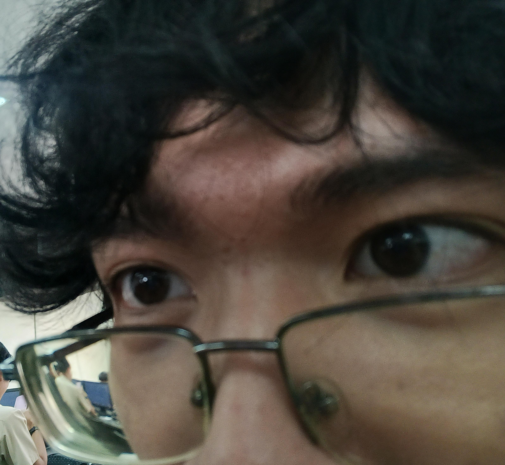

Started recording for the website and for sir.
About Me

About Myself
Hi! I’m Diover Vincent L. Canilo, a student of National University. I love sharing my thoughts, experiences, and creative ideas through this blog. Here, you’ll find stories about my student life, projects, and daily learnings.
My Blog
This blog is where I share my experiences, thoughts, and ideas — whether it’s my day at school, interesting projects, or reflections from everyday moments. I hope my content inspires readers to explore, create, and stay curious.
Update Notes
Oct 17, 2025: Added the update notes section below the blog!
Oct 13, 2025: Website progress started!
Site Progress / Journal
Oct 18, 2025
Oct 17, 2025
Finalized the Update Notes widget so it appears under the blog on the right column. Fixed small spacing and improved hover styles. Thought of this because I've been making some updates and figured User's who read this might want to know what I've added in my blog or updated in my UI
Oct 16, 2025
Implemented scrollable schedule/chronicle area. Converted previous schedule layout into a timeline-style blog. Again, researched online for this. W internet, also added the contacts finally its just like my old one, but not stick to the sides like the old one
Oct 15, 2025
Centered navigation, tuned gradient background to diagonal, and swapped animated gradient for a static pattern to reduce resources load (I tested this website on my old pc, it lagged lol).
Oct 14, 2025
Added the profile picture and About Myself card. Adjusted card sizes and added a subtle border to bring back the gray outline around sections. Had helped online for this, mainly about how to control a border.
Oct 13, 2025
Started the website prototype: header, sticky navigation, and base layout. Created initial. pages card style and glass-like blur background. Kinda hard because I had to figure out how to do all of this with the help of sir's modules and youtube videos.